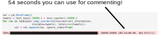
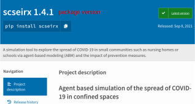

Module 2: Digitalisation in Research
Coding best practices
Jana Lasser
TU Graz & CSH Vienna
2021-11-25
The aims of coding best practices
Enable others to ...
... find your code.
... understand your code.
... run your code.
The aims of coding best practices
Enable others to ...
... find your code → code repositories
... understand your code → comments & documentation
... run your code → dependencies & containers
Enable others to understand your code
Commenting best practices
# mesa models already implement fixed seeds through their own random
# number generations. Sadly, we need to use the Weibull distribution
# here, which is not implemented in mesa's random number generation
# module. Therefore, we need to initialize the numpy random number
# generator with the given seed as well
if seed != None:
np.random.seed(seed)
# sets the (daily) transmission risk for a household contact without
# any precautions. Target infection ratios are taken from literature
# and the value of the base_transmission_risk is calibrated such that
# the simulation produces the correct infection ratios in a household
# setting with the given distributions for epidemiological parameters
# of agents
self.base_transmission_risk = base_transmission_risk
Write why you did something, not what you did.
Commenting best practices
def get_floor_distribution(N_floors, N_classes):
"""
Distribute the number of classes evenly over the number of available floors.
Parameters
----------
N_floors : int
Number of available floors.
N_classes : int
Number of classes in the school.
Returns
-------
floors : dictionary
Dictionary of the form {floor1:[class_1, class_2, ...], ...}
floors_inv : dictionary
Dictionary of the form {class1:floor1, ..., class_N:floor_N}
"""
floors = {i:[] for i in range(N_floors)} # starts with 0 (ground floor)
classes = list(range(1, N_classes + 1))
classes_per_floor = int(N_classes / N_floors)
Comment your functions and classes.
Commenting best practices
Comment while you code and/or while your code is running.
Commenting best practices
You copied some code from Stack Owerflow?
Best: understand it and comment in your own words.
Second best: leave a note to the post where you found the code.
Code style: making the code readable
A style guide is about consistency. Consistency with this style guide is important. Consistency within a project is more important. Consistency within one module or function is the most important.
PEP 8 - Style Guide for Python Code
When you start a new project:
- Have a look at the language's style guide.
- What conventions make sense for your project?
- Consider using a code formatter (example black).
Enable others to run your code
Challenges
Code dependencies
Dependency versions
System requirements
Code dependencies
import math # standard module
import numpy as np # third-party package
import mesa # third-party package
import scseirx # custom package
Almost all modern code depends on other code (libraries, packages).
List all code dependencies
appdirs==1.4.3
argon2-cffi==20.1.0
arrow==0.17.0
async-generator==1.10
attrs==20.3.0
backcall==0.2.0
binaryornot==0.4.4
...
For Python: write a requirements file:
pip freeze > requirements.txt
Install all requirements for a repository:
pip install -r requirements.txt
Encapsulate your coding projects in virtual environments.
Code versions
Packages are under development themselves. Releases are indicated by versions.
Code Versions
Aim: make your code usable by others: consider releasing a package (workflow for Python).
Aim: make your code citable by others: assign a DOI to a code version (workflow for Zenodo).
System requirements
Hardware requirements
Language versions
Driver versions
Compiler versions
...
Document these in the repository's README!